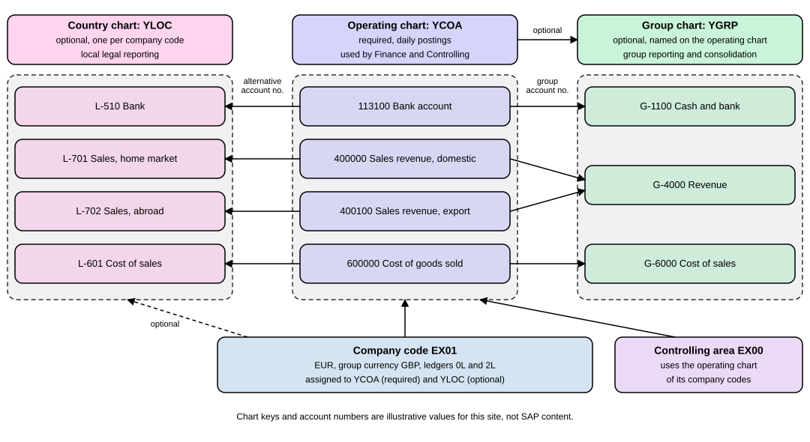

Charts of Accounts and G/L Accounts
|
This content was generated with the assistance of AI and should be verified against the official documentation before being relied on in production. |
Every posting in the books of a company names an account: money in the bank, sales revenue, rent. The full list of accounts that a company may use is its chart of accounts, and each single entry in that list, with everything the system needs to know about it, is a G/L account (G/L stands for general ledger). You can think of the chart of accounts as the table of contents of the books and of a G/L account as one chapter heading with its rules: what kind of account it is, which accounts may sit next to it, which fields a clerk must fill when posting to it. A newcomer meets both at once, because a company code cannot post anything until it has a chart of accounts and the accounts inside it. This page explains the three kinds of chart of accounts, how a G/L account is split into a part shared by all company codes and a part owned by one company code, the types, groups and field status that shape an account, and the retained earnings account that carries profit from one year to the next. It is written against SAP S/4HANA 2025 FPS02 (on premise and Private Edition) and SAP S/4HANA Cloud Public Edition 2608. The concepts are shared; the Public Edition maintains accounts in different places and in a development system first, which the page names.
Before you read
-
Organizational Structures: what a client and a company code are, because a chart of accounts is assigned to company codes.
-
Organizational Units in Finance: the controlling area, which must use the same chart of accounts as its company codes.
-
Accounting Basics: the five kinds of account (asset, liability, equity, revenue, expense) and the balance sheet and profit and loss statement.
-
Customizing and the Implementation Guide: where the configuration paths on this page (the SPRO menu) are found.
Key terms
-
Chart of accounts: the structure that holds the G/L accounts used by one or more company codes.
-
Operating chart of accounts: the chart used for daily postings in a company code and in the controlling area; every company code has exactly one.
-
Group chart of accounts: the chart whose accounts are shared by the whole corporate group, so that group reporting is possible.
-
Country chart of accounts: an optional chart that holds the accounts a country’s legal reporting needs; the Public Edition calls it the alternative or local chart of accounts.
-
G/L account: one account of the general ledger, kept as a master record.
-
G/L account type: the classification of an account as balance sheet, nonoperating expense or income, primary costs or revenue, secondary costs or cash.
-
Account group: a set of characteristics that controls how accounts are created: the allowed number interval and the screen layout.
-
Field status group: the key in the company-code area of an account that decides which posting fields are suppressed, required or optional.
-
Retained earnings account: the equity account that receives the balance of the profit and loss accounts at year end.
The running example: Example Trading Co.
This site uses one fictitious business, Example Trading Co., with company code EX01. For this page EX01 keeps its books in euro (EUR), reports to a parent that consolidates in British pounds (GBP), has the leading ledger 0L and a second ledger 2L, and belongs to controlling area EX00. The chart of accounts of EX01 is called YCOA here, after the standard operating chart that SAP delivers in the Public Edition, as a placeholder: a real system uses the chart that the implementation chose. Its group chart is called YGRP and its country chart YLOC, which are invented keys. All keys, account numbers and amounts are illustrative values chosen for this site, not SAP content.
What a chart of accounts is
SAP defines a chart of accounts as a structure containing the G/L accounts used by one or more company codes. For each account the chart shows the account number, the account name and information that determines the function of the account and how it is created in the company code and in the controlling area. Three rules follow from that definition.
-
You assign a chart of accounts to each company code. This chart is then the operating chart of accounts and is used for the daily postings of the company code. If cost and revenue accounting is active, the same chart is used for postings in the controlling area.
-
A chart of accounts belongs to a client, and a client may hold several. SAP lists the reasons for separate charts as the location (country), branch, corporate structure, corporate size and legal requirements. If none of these asks for a separate chart, one common chart can serve many company codes.
-
The chart assigned to a controlling area must be the same as the chart of the company codes assigned to that area.
Two settings of a chart in the chart of accounts list are worth knowing before the first account is created. The maintenance language is the one language in which account names are created and changed, and names can be translated afterwards. The account number length is at most 10 characters. Internally an account number is always 10 characters long: a purely numeric number is padded with zeros on the left, an alphanumeric one with spaces on the right. SAP recommends numbers of equal length and either numeric or alphanumeric numbers, not both, and it stresses that the account group’s number interval (see the section on account groups) decides which numbers are allowed.
Operating, group and country charts
A chart of accounts can have one of three functions, and a company code can combine them.
| Chart | What it is for | Assignment |
|---|---|---|
Operating chart of accounts |
The accounts for daily posting. Financial Accounting and Controlling both use it. |
Required: every company code has one. Several company codes with the same needs share one operating chart. |
Group chart of accounts |
The accounts used by the whole corporate group, which makes group reporting possible. |
Optional. It is named on the operating chart (the chart of accounts list has a group chart field), and each operating account can carry the number of the group account it belongs to. |
Country-specific chart of accounts |
The accounts a country’s legal reporting requires. |
Optional. It is assigned to the company code, next to the operating chart. |
Without a group or country chart nothing is lost for daily work: SAP states that using different charts has no effect on the balance sheet and the income statement. When you create those statements you choose whether company codes with different charts are balanced together or separately. SAP names the typical case for the extra charts: company codes in different countries need different charts, and then each can use up to two additional charts besides its operating chart (a group chart and a country chart). When all company codes are in one country, one operating chart is enough.
The figure shows the three charts for Example Trading Co. EX01 is assigned to YCOA and, optionally, to YLOC; YGRP hangs off YCOA. Each operating account can point to an account of the country chart (the alternative account number) and to an account of the group chart (the group account number). Several operating accounts may share one group account, as the two sales accounts share Revenue.

The mapping is why a group can read one set of figures from many company codes whose operating charts differ: reports and consolidation use the group account number, local reports use the alternative number, and the operating number is the one clerks type.
Central or decentral organization
SAP describes two basic ways to organize charts, and the choice follows the level at which you want to see cost information.
-
In a central organization the group defines one chart that contains all accounts and is the operating chart of every company code. Each company code can add a country-specific chart for its legal needs. The advantage is that cost accounting across company codes is possible and consolidation uses the operating chart. The disadvantage is that accountants cannot work with their own country charts.
-
In a decentral organization each company code uses its country-specific chart as its operating chart and the group chart is entered additionally for consolidation. The advantage is that accountants work with their own charts and data can be consolidated through the group chart. The disadvantage is that cost accounting across company codes is not possible.
Example Trading Co. has one company code, so it needs neither; if it added a second legal company in another country under the same controlling area EX00, the central model would let both company codes share YCOA, while the decentral model would give the second company its own operating chart and, as the finance units page explains, that company could then not share EX00.
Charts of accounts in the Public Edition
In the Public Edition the same three functions exist under slightly different names: the operating chart of accounts (also called the global chart), the group chart of accounts, and the alternative chart of accounts (also called the local chart). All company codes are automatically assigned to the operating chart during implementation, and all use the same one: SAP delivers the standard operating chart YCOA, usable for all countries and not specific to an industry. You can use it as delivered or as a template to adapt during implementation, and you cannot change the delivered chart or its standard account groups, only add your own. A company code can have one additional alternative chart, and SAP delivers alternative charts with their account master data and number assignments for many countries; if none fits, you create one in your development system and transport it to production.
The Public Edition adds one practical feature: when you create journal entries manually you can post to the alternative account number of a company code that uses an alternative chart, after you activate that option in the Edit Options for Journal Entries app. The line then shows the alternative number in the G/L account field and the operating account in a second field.
Group reporting is a separate matter. If you use the delivered Group Reporting content (scope item 1SG) you need a consolidation chart of accounts, and SAP notes that it differs from the group chart used in G/L accounting.
The two areas of a G/L account
A G/L account is not one record but a set of areas, so that company codes that share a chart can share accounts and still keep their own settings. SAP names three areas.
| Area | What it holds | Example |
|---|---|---|
Chart of accounts area |
Data valid for all company codes that use the chart: chart of accounts, account number, short and long name, G/L account type, account group, and the entries needed for consolidation (group account number and trading partner). For a profit and loss account the P&L statement account type is entered here too. |
Account |
Company-code area |
Data that may differ from company code to company code, such as the currency in which the account may be posted, and the field status group. Before a company code can post to an account, this area must exist. |
|
Controlling-area area |
Data that may differ from controlling area to controlling area, such as the cost element category. Required only for accounts of type primary costs or revenue and secondary costs. |
|
The consequence is a two-step creation. The account must exist in the chart of accounts before it can be created in a company code, and the company code can create only the part it owns. SAP describes two ways to organize the work. In a central organization one team creates all master records of a uniform chart in the chart of accounts, and each company code adds its own company-code data later, or the whole record is created in one step and the company codes only change records. In a decentral organization the staff of each company code edit both areas, centrally in one step if they wish. Authorizations decide who may do which.
A block can sit in either area. In the chart of accounts area you can block creation of the account in company codes and block postings; in the company-code area you can block only postings, and you can set or clear a block at any time. Marking for deletion follows the same split: the indicator in the chart of accounts area deletes the account in every company code using the chart, while the indicator in the company-code section affects only that company code.
Sources: G/L Account Master Data (SAP Help Portal, on premise), G/L Account Master Data in the Chart of Accounts (SAP Help Portal, on premise), G/L Account Master Data in the Company Code (SAP Help Portal, on premise), Functions for Editing G/L Account Master Records (SAP Help Portal, on premise), Blocking a G/L Account Master Record (SAP Help Portal, on premise), Marking a G/L Account Master Record for Deletion (SAP Help Portal, on premise)
G/L account types
The G/L account type, set in the chart of accounts area, tells the system what kind of account it is dealing with. The Public Edition documents five types, and the on-premise payment-process page names the cash account type too, although one older on-premise page still lists four.
| Type | What it means | Example for EX01 |
|---|---|---|
Balance sheet account |
Business transactions are posted to it, and its balance is carried forward at fiscal year end. |
|
Nonoperating expense and income |
An income statement account for expenses or gains from activities outside the company’s main purpose, such as gains realized from financial investments by a manufacturing company. |
|
Primary costs or revenue |
An income statement account that works as a cost element for primary costs or revenue. Primary costs are operating expenses such as payroll, selling or administration costs. |
|
Secondary costs |
An income statement account that works as a cost element for secondary costs, which come from value flows inside the organization: internal activity allocations, overhead allocations and settlement. |
|
Cash account |
A balance sheet account used specifically for payment processes. It must have a subtype: bank reconciliation account, bank subaccount (a clearing account for payments in transfer) or petty cash. |
|
The two cost types matter because of Controlling. In SAP ERP each cost element was its own master record next to the G/L account. In S/4HANA the cost element is part of the chart of accounts, so an account of type primary costs or revenue or secondary costs also has the controlling-area data (the cost element category), and a posting to such an account usually needs an account assignment such as a cost center. See Finance Overview for cost elements.
A type can be changed only while the account has no postings in the production system. For cash accounts that serve a house bank connection SAP recommends bank reconciliation accounts: one set of accounts (a reconciliation account and one bank subaccount per payment method) can then serve many house banks, whereas plain balance sheet accounts need a new set for every house bank account. Reconciliation accounts of customers and vendors are a different thing: they are balance sheet accounts that summarize a subledger, and SAP says they are not managed on an open-item basis themselves but implicitly through the subledger open items; see Open Items and Clearing.
Account groups and field status
A clerk creating an account should not have to decide the number range and the screen layout each time, so SAP puts both into the account group. SAP defines it as a summary of characteristics that control how master records can be created: it specifies which fields are mandatory or optional and can predefine the number interval. When you create an account in the chart of accounts area you must name an account group, and account groups are always based on a chart of accounts.
-
The allowed number range. SAP’s example is an account group called Liquid Assets with the interval 100000 to 129999: creating an account with the group and the number 131000 is rejected because the number lies outside the interval. Intervals of different groups may overlap, so a separate group with an interval inside another can hold accounts that belong to no special area.
-
The screen layout of the company-code area. Each field group gets one of the field statuses suppress (not shown), required entry, optional entry or display (display only). SAP advises not to use display, because all fields should be available for entry. The fields Currency and Field status group must be in the master record and always need an entry.
For EX01 an illustrative design uses four groups. The keys and intervals are values chosen for this site.
| Group | Accounts it holds | Number interval |
|---|---|---|
|
Bank and petty cash accounts |
|
|
Share capital and retained earnings |
|
|
Sales revenue accounts |
|
|
Cost of goods sold and other expense accounts |
|
Account 113100 fits LIQ. A try to create 131000 with LIQ is refused, exactly as in SAP’s example.
An account group is not final once it exists. You may change the group of an existing account, which changes the field status definition and the number interval for it; you may change the field status definition of a group, which affects the display and change of every account created with it (the current definition always applies, and field contents entered before remain even if the field is now hidden); and you may enlarge the number interval, which affects only accounts created afterwards. You may delete a group only if no master record uses it.
The field status group is a separate key. It is entered in the company-code area of each account, and its fields are the ones the screen layout of the account group controls. Number Ranges, Field Status Variants and Tolerance Groups explains the field status group, the variant and the posting key in detail. The default when nothing is maintained differs by release. For an on-premise group SAP says that a field without a status becomes suppressed, so all fields are hidden if you forget; the Public Edition says that all fields are displayed by default, or that a copied group takes the status of the group it was copied from.
The retained earnings account
At year end a company’s profit becomes part of its equity. The account that holds the profit kept in the business from earlier years is the retained earnings account. SAP does not ask accountants to close the profit and loss accounts by hand: the balance sheet report computes the profit or loss of the year from the accounts assigned to assets and liabilities and shows it without any posting, and the profit or loss carried forward from earlier years comes from the retained earnings account, provided that account is assigned to that line of the financial statement version. The program that carries the balances into the new year does the transfer: balance sheet accounts are carried to the same accounts, and profit and loss accounts are carried to one or more retained earnings accounts, whose balance they set to zero.
The system must know which retained earnings account receives which profit and loss account. SAP uses a key. In the master record of each profit and loss account the field P&L statement account type holds a key. In Customizing you define the retained earnings account for that key in the activity Define Retained Earnings Account. Companies normally use one retained earnings account, and SAP suggests the key X for it. Using several keys gives several retained earnings accounts. SAP’s example is a group with a German and a US company code. Expenses for special tax provisions that count in the US but not in Germany are posted to income statement accounts used in the US only; those accounts get a second key and a second retained earnings account. The German statement then reports the prior-year result from retained earnings account 1, and the US statement from both accounts 1 and 2.
The profit and loss accounts of the three account types that carry profit and loss (nonoperating, primary and secondary) therefore need that key before the carryforward can run. In the Public Edition the carryforward is scheduled automatically two weeks before the new fiscal year starts and is updated when postings reach the old year, and you can also schedule it with the Balance Carryforward job template of the Schedule General Ledger Jobs app. The result for the retained earnings account is stated as a formula.
Here is the opening balance of the retained earnings account in the new year, is its closing balance of the previous year and is the retained earnings from the profit and loss accounts, that is, the profit of the year.
Worked example for EX01
In fiscal year 2026 EX01 books these profit and loss balances in EUR: sales revenue, domestic 400000, 90,000 credit; sales revenue, export 400100, 30,000 credit; cost of goods sold 600000, 70,000 debit; other expenses 650000, 30,000 debit. The retained earnings account 310000 has a closing balance of 50,000 credit from earlier years. All four profit and loss accounts carry the key X, and 310000 is the account defined under X.
The profit is revenue minus expenses:
The opening balance of 310000 in 2027 is then:
| Account | Balance, closing 2026 (EUR) | Effect on 310000 (EUR) |
Opening 2027 (EUR) |
|---|---|---|---|
|
90,000 credit |
plus 90,000 credit |
0 |
|
30,000 credit |
plus 30,000 credit |
0 |
|
70,000 debit |
minus 70,000 (debit) |
0 |
|
30,000 debit |
minus 30,000 (debit) |
0 |
|
50,000 credit |
net plus 20,000 credit |
70,000 credit |
The four profit and loss accounts start 2027 at zero, and the credits and debits moved to 310000 net to 20,000 credit (120,000 credit less 100,000 debit), so equity rises by exactly the year’s profit. No manual closing journal entry is needed. The amounts are in the company code currency EUR; the group currency GBP and the ledgers 0L and 2L carry the same logic in their own amounts, and Ledgers, Currencies and Exchange Rates explains them. The page on Period-End Closing covers the balance carryforward at the year end.
Sources: Special Features in Income Statement Accounts (SAP Help Portal, on premise), Using Several Retained Earnings Accounts: Example (SAP Help Portal, on premise), Determination of Annual Net Income and Retained Earnings (SAP Help Portal, on premise), Balance Carryforward in G/L Accounting (SAP Help Portal, on premise), Balance Carryforward (SAP Help Portal, Public Edition)
Maintaining accounts: FS00 and the Fiori apps
SAP GUI users create and change accounts with the transaction FS00 (Edit G/L Account Centrally), which shows the chart of accounts area and the company-code area on tabs together. FSP0 edits the chart of accounts area only and FSS0 the company-code area only. The Fiori launchpad offers two apps for the same work.
-
Manage G/L Account Master Data (app ID F0731A) displays, creates and edits G/L accounts. It creates an account from scratch or from an existing one, and it can change descriptions and other attributes of many accounts at once, up to 5,000 accounts for each mass change action, from the Chart of Accounts, Company Code or Controlling Area view. It also shows where an account is used in a financial statement version or in the Automatic Account Determination app. SAP lists FS00, FSP0, FSS0 and the cost element transactions as its related back-end transactions.
-
Manage Chart of Accounts (app ID F0763A) shows accounts as they sit in a selected financial statement version or by the ID of a chart of accounts, in a hierarchy or a list. It shows the accounts assigned to the balance sheet and to the profit and loss statement, those not assigned at all and those that must have a zero balance, and you can copy an account and its financial statement version assignment. A click on an account number opens Manage G/L Account Master Data.
In the Public Edition the work is split by role and system: configuration experts create and change accounts and financial statement versions in the development system, from the configuration environment, and expert accounting users can use the app directly on the launchpad; accountants only view accounts in production. Changes travel through transports from development to test to production, and SAP warns that, to leave an audit trail for the changes, you also run the Synchronize G/L Account Master Data app before the transport. A two-system landscape differs only in having a quality system instead of development and test.
Ways to create accounts are the same in principle. SAP names creating with a reference to an existing company code or chart (the best way when a standard chart fits, because the account assignments are copied too), the Data Transfer Workbench for accounts from a non-SAP system, copying a whole chart of accounts and then the company code, and creating each account manually. Manual creation is time-consuming; use it only if no standard or existing chart can serve as the reference. Before any account is created, the chart of accounts list, the assignment of the company code to a chart and the account groups must exist.
Sources: Manage G/L Account Master Data (SAP Help Portal, on premise), Manage Chart of Accounts (SAP Help Portal, on premise), Manage G/L Account Master Data (SAP Help Portal, Public Edition), Chart of Accounts (SAP Help Portal, Public Edition), Creating and Editing G/L Account Master Records (SAP Help Portal, on premise)
Configuration paths
All paths below are in the Implementation Guide under Financial Accounting, General Ledger Accounting. The Public Edition makes the same settings as configuration activities in the configuration environment, found with the search function.
| Setting | On premise 2025 FPS02 (SPRO) | Public Edition 2608 |
|---|---|---|
Chart of accounts list |
Master Data, G/L Accounts, Preparations, Edit Chart of Accounts List |
Configuration activity Edit Chart of Accounts List. |
Assign company code to chart |
Master Data, G/L Accounts, Preparations, Assign Company Code to Chart of Accounts |
Configuration activity Assign Company Code to Chart of Accounts; company codes are assigned to the operating chart during implementation. |
Account groups and field status |
Master Data, G/L Accounts, Preparations, Define Account Group |
Configuration activity Define Account Group, in the development system during Product-Specific Configuration. |
Create accounts |
Master Data, G/L Accounts, G/L Account Creation and Processing, Edit G/L Account (Individual Processing) |
Configuration activity or app Manage G/L Account Master Data. |
Retained earnings account |
Periodic Processing, Carry Forward, Define Retained Earnings Account (an older help page names Master Data, G/L Accounts, Preparations, Define Retained Earnings Account) |
The Public Edition page cited here describes the automatic carryforward and not a configuration path. |
These listings require an SAP system; not run here. Open each activity by its name with the search in the Implementation Guide or in the configuration environment.
Common errors and pitfalls
| Symptom | Likely cause | What to check |
|---|---|---|
An account cannot be created in a company code |
The company code has no chart assigned, the account does not exist in the chart yet, or it is blocked from creation in the company code. |
Check the assignment of the company code to the chart, then the chart area of the account and its block indicator. |
A new account number is rejected |
The number lies outside the interval of its account group. |
Compare the number with the interval of the group; intervals may overlap, so a second group may fit. |
Fields are missing or all fields appear on a new account |
The field status of the account group was not maintained: on premise the fields are suppressed, in the Public Edition all are displayed or copied from the source group. |
Maintain the screen layout of the group, then check the field status group of the account. |
A cash account is incomplete in the Public Edition |
The account has the cash type but no subtype, which SAP requires for every cash account. |
Choose bank reconciliation account, bank subaccount or petty cash. |
The type of an account cannot be changed |
Postings already exist in the production system. |
Create a new account by copying the old one with the right type. |
Profit and loss accounts do not reach retained earnings |
The P&L statement account type of the accounts has no key, or no retained earnings account is defined for the key. |
Check the key in the chart area of each profit and loss account and the definition under the key. |
Two company codes cannot share a controlling area |
Their operating charts differ. |
Company codes of one controlling area use the same operating chart. |
What older books show, and what has changed
Stoil Jotev’s Configuring SAP S/4HANA Finance (3rd edition, 2025) opens its master data chapter with the three kinds of chart, the chart of accounts list fields (description, maintenance language, account number length, group chart, blocked), the assignment of charts to company codes, the account groups of the standard chart with their number intervals, the three account maintenance transactions and the fields of an account, and returns to retained earnings in its section on balance carryforward. It matches this page, but its screens are for the on-premise Implementation Guide and it does not show the Public Edition, where YCOA is delivered and cannot be changed, accounts are maintained in the development system and transported, and an alternative chart can be posted to directly. It also labels the P&L statement account type field with a different name than the help pages do, so look for the field by its function. Andrew Okungbowa’s SAP S/4HANA Financial Accounting Configuration (2nd edition, 2023) devotes its chart of accounts chapter to the same steps with a case-study style, including copying a standard chart and defining account groups by copying, and its general ledger chapter to creating accounts, with a template as well. It places the Define Retained Earnings Account activity under the master data preparations, which matches an older help page; the 2025 on-premise help for balance carryforward names the Periodic Processing, Carry Forward path. Neither book covers the Public Edition’s cash account types and subtypes or its automatic balance carryforward. Where the books and the SAP Help Portal pages above differ, the help pages win.
Summary
-
A chart of accounts is the structure of G/L accounts used by one or more company codes. Each company code has one operating chart of accounts, used by Finance and Controlling; a group chart and a country chart are optional extras.
-
The chart of a controlling area must equal the chart of its company codes. Central organization shares one chart; decentral organization gives each company its own operating chart and uses the group chart for consolidation.
-
A G/L account has a chart of accounts area (shared: number, names, type, account group, group account number), a company-code area (currency, field status group) and, for cost accounts, a controlling-area area.
-
The five account types are balance sheet, nonoperating expense and income, primary costs or revenue, secondary costs and cash, the last with the subtypes bank reconciliation, bank subaccount and petty cash.
-
The account group fixes the allowed number interval and the screen layout of the company-code area; the field status group named in each account decides which posting fields are suppressed, required or optional.
-
Profit and loss accounts reach the retained earnings account through the key in their P&L statement account type; the opening balance is , 70,000 EUR for
EX01in the example. -
On premise accounts are maintained with FS00, FSP0 and FSS0 or the apps Manage G/L Account Master Data (F0731A) and Manage Chart of Accounts (F0763A); the Public Edition uses the apps and the development system with transports.
References
-
G/L Account Master Data in the Chart of Accounts (SAP Help Portal)
-
G/L Account Master Data in the Company Code (SAP Help Portal)
-
Functions for Editing G/L Account Master Records (SAP Help Portal)
-
Creating and Editing G/L Account Master Records (SAP Help Portal)
-
Marking a G/L Account Master Record for Deletion (SAP Help Portal)
-
Special Features in Income Statement Accounts (SAP Help Portal)
-
Using Several Retained Earnings Accounts: Example (SAP Help Portal)
-
Determination of Annual Net Income and Retained Earnings (SAP Help Portal)
-
Manage G/L Account Master Data (SAP Help Portal, on premise)
-
Chart of Accounts: Different Types (SAP Help Portal, Public Edition)
-
How to Create an Alternative Chart of Accounts (SAP Help Portal, Public Edition)
-
Manage G/L Account Master Data (SAP Help Portal, Public Edition)
-
SAP S/4HANA Financial Accounting Configuration, Andrew Okungbowa, 2nd edition, Apress 2023
-
Configuring SAP S/4HANA Finance, Stoil Jotev, 3rd edition, SAP PRESS 2025